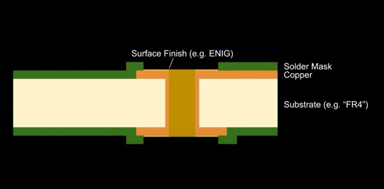
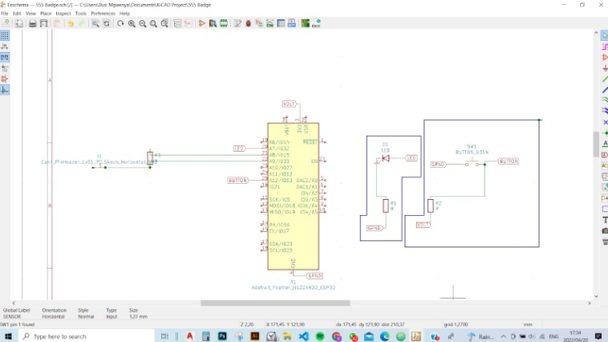
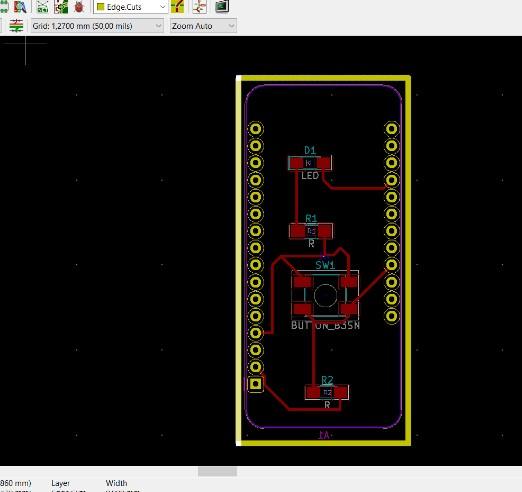
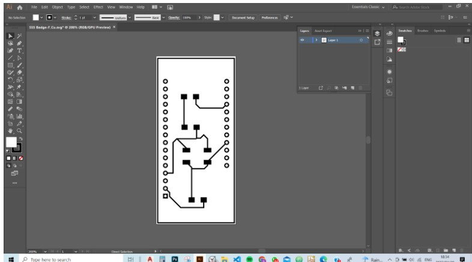

Milling a PCB
This week we focused on PCB ( printed circuit board) manufacturing, PCBs are good for preventing short circuits and are a good way for milling non toxic materials. The PCB is a milled sheet of copper that has pads and signal trace structures from a digital circuit board, also known as a a lay out file. In the Fab Lab Barcelona facilities, we have access to the The Roland monoFab SRM-20 Most common materials used for milling are phenolic resin, epoxy resin, and polyester resin. We learnt how to solder a line for LED lights on a pre-cut PCB board. Soldering a PCB Board. Soldering is a process in which two or more items are joined together by melting and putting a filler metal into the joint, the filler metal having a lower melting point than the adjoining metal.
How to solder:
Cross section of a PCB




This week’s assignment was around computer aided cutting, mostly centered around lazer cutting and vinyl cutting. The project I sought to do was to make fidgeting toys and accessories For adults dealing with obsessive compulsive disorders (OCD) and body-focused (BFRB) repetitive behavior ( such as nail biting, hair pulling and fidgeting). The idea is to 3D print artifacts that are aesthetically pleasing and look like sculptures, that can be placed in the home, office table or school, easily accessible for the user when they have bodily focused urges. The shape of the artifacts resemble the Nigerian language Nsibi. The collection of artifacts resemble a few speech, love and unity.